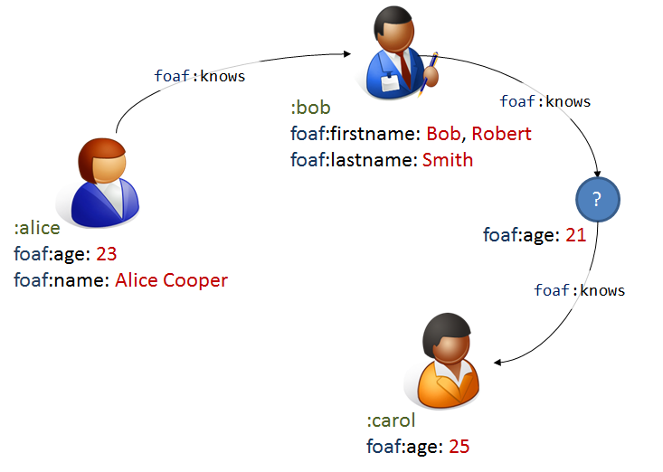

Slides: http://weso.github.io/RDFValidation_ESWC16/slides/rdfValidation
<http://example.org/alice> <http://xmlns.com/foaf/0.1/knows> <http://example.org/bob>.
<http://example.org/alice> <http://xmlns.com/foaf/0.1/knows> <http://example.org/bob> . <http://example.org/bob> <http://xmlns.com/foaf/0.1/knows> <http://example.org/carol> . <http://example.org/carol> <http://xmlns.com/foaf/0.1/knows> <http://example.org/alice> . <http://example.org/alice> <http://dbpedia.org/ontology/birthPlace> <http://dbpedia.org/resource/Oviedo> . <http://example.org/carol> <http://dbpedia.org/ontology/birthPlace> <http://dbpedia.org/resource/Oviedo">< .
prefix dbo: <http://dbpedia.org/ontology/> prefix : <http://example.org/> prefix dbr: <http://dbpedia.org/resource/> prefix foaf: <http://xmlns.com/foaf/0.1/"><http://dbpedia.org/ontology/> :alice dbo:birthPlace dbr:Oviedo ; foaf:knows :bob . :bob foaf:knows :carol . :carol dbo:birthPlace dbr:Oviedo ; foaf:knows :alice .
:bob foaf:knows _:1 ; foaf:age 25 ; foaf:name "Robert" ; dbo:birthDate "1990-02-03"^^xsd:date . _:1 foaf:age 34 .
<rdf:RDF xmlns:rdf="http://www.w3.org/1999/02/22-rdf-syntax-ns#" xmlns="http://example.org/" xmlns:dbo="http://dbpedia.org/ontology/" xmlns:dbr="http://dbpedia.org/resource/" xmlns:foaf="http://xmlns.com/foaf/0.1/" xmlns:xsd="http://www.w3.org/2001/XMLSchema#"> <rdf:Description rdf:about="http://example.org/alice"> <foaf:knows> <rdf:Description rdf:about="http://example.org/bob"> <dbo:birthDate rdf:datatype="http://www.w3.org/2001/XMLSchema#date" >1990-02-03</dbo:birthDate> <foaf:name>Robert</foaf:name> <foaf:age rdf:datatype="http://www.w3.org/2001/XMLSchema#integer" >25</foaf:age> <foaf:knows rdf:parseType="Resource"> <foaf:age rdf:datatype="http://www.w3.org/2001/XMLSchema#integer" >34</foaf:age> </foaf:knows> <foaf:knows> <rdf:Description rdf:about="http://example.org/carol"> <foaf:knows rdf:resource="http://example.org/alice"/> <dbo:birthPlace rdf:resource="http://dbpedia.org/resource/Oviedo"/> </rdf:Description> </foaf:knows> </rdf:Description> </foaf:knows> <dbo:birthPlace rdf:resource="http://dbpedia.org/resource/Oviedo"/> </rdf:Description> </rdf:RDF>
Represents a plain list of triples
Example:
<http://example.org/carol> <http://xmlns.com/foaf/0.1/knows> <http://example.org/alice> . <http://example.org/carol> <http://dbpedia.org/ontology/birthPlace> <http://dbpedia.org/resource/Oviedo> . <http://example.org/alice> <http://xmlns.com/foaf/0.1/knows> <http://example.org/bob> . <http://example.org/alice> <http://dbpedia.org/ontology/birthPlace> <http://dbpedia.org/resource/Oviedo> . <http://example.org/bob> <http://dbpedia.org/ontology/birthDate> "1990-02-03"^^<http://www.w3.org/2001/XMLSchema#date> . <http://example.org/bob> <http://xmlns.com/foaf/0.1/name> "Robert" . <http://example.org/bob> <http://xmlns.com/foaf/0.1/age> "25"^^<http://www.w3.org/2001/XMLSchema#integer> . <http://example.org/bob> <http://xmlns.com/foaf/0.1/knows> _:B1 . <http://example.org/bob> <http://xmlns.com/foaf/0.1/knows> <http://example.org/carol> . _:B1 <http://xmlns.com/foaf/0.1/age> "34"^^<http://www.w3.org/2001/XMLSchema#integer> .
Represent the following information in RDF
RDFShape can be used to check RDF syntax and to convert between different syntaxes